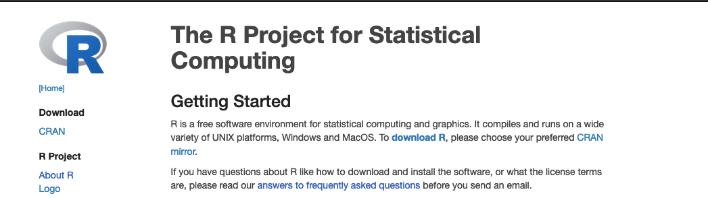
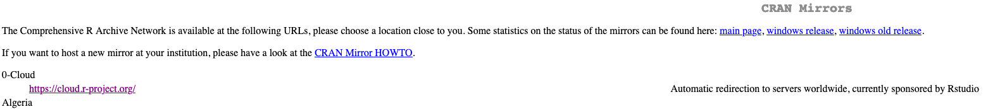
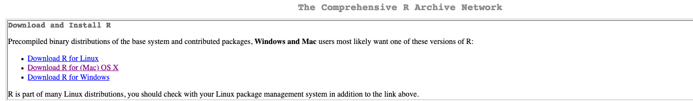

Chapter 3 Software for class
Objectives:
- To familiarize ourselves with the main software used in class
- To install programs used for basic quantitative biology
- To perform basic tests of functionality of these programs
As I mentioned in the previous chapter, we are going to use R, RStudio and the basic UNIX command line for our exercises, as well as atom, a basic text editor that’s widely used in programming to view and edit files.
3.1 How to install R?
Open an internet browser and go to www.r-project.org
Click the “download R” link in the middle of the page.

Downloading R
- Select a CRAN location (a mirror site) and click the corresponding link.

Downloading R
- Click on the “Download R for” your operating system link at the top of the page.

Links for R
- For Windows users: Click on the “install R for the first time” link at the top of the page. Run the
.exefile and follow the installation instructions.
- For MacOS X users: Click on the “R-4.0.2.pkg” link to download the install package. Run the
.pkgfile and follow the installation instructions.
3.2 How to install RStudio?
- Go to www.rstudio.com and click on the “Download” link.
2. Click on “Download RStudio Desktop (FREE)” in the lower part of the page.

Links for R
- Click on the version recommended for your system. save the .exe/.dmg file on your computer, double-click it to open, and then drag and drop it to your applications folder.
3.3 How to install Atom?
- Go to the atom webpage at https://atom.io/
- Click on Download.
- In Mac OS: Move the application to the Applications folder
- In Windows: Execute the
AtomSetup.exefile
3.4 How to install MATLAB?
- Go to Clark’s software webpage at https://www.clarku.edu/offices/its/a-z-service-catalog/software-for-all/
- Click on the text under MATLAB “Download”.
- You will be redirected to the mathworks website through Clark University. After you click on
Sign in to get started, you will need to follow the prompts to login using your Clark username.